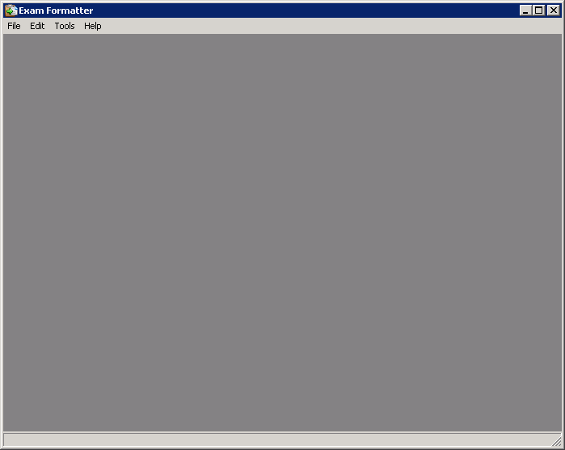
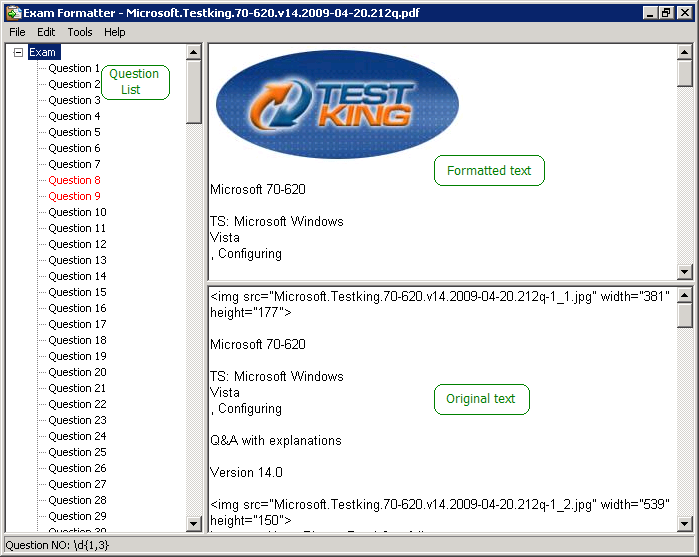
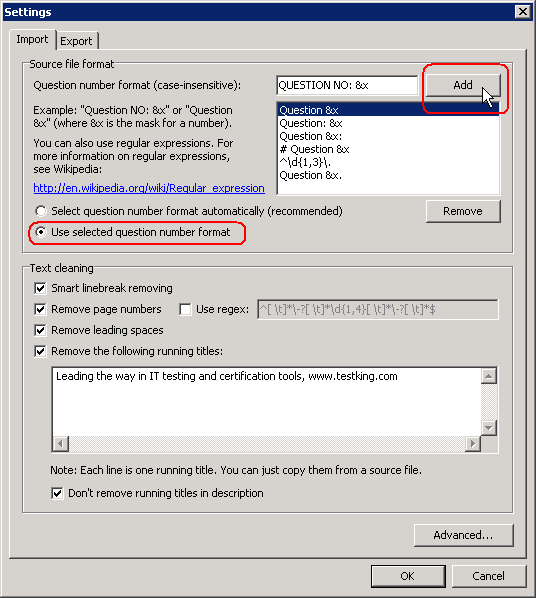
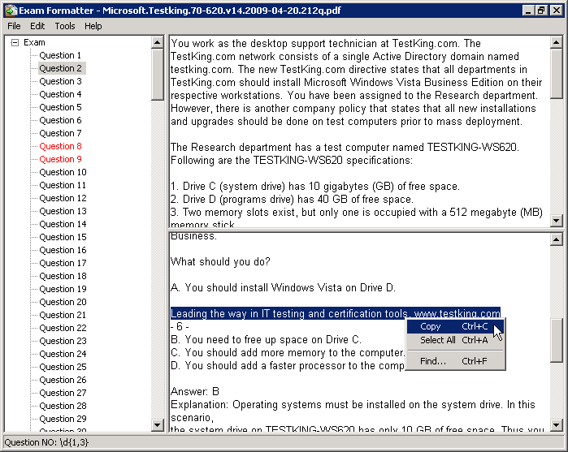
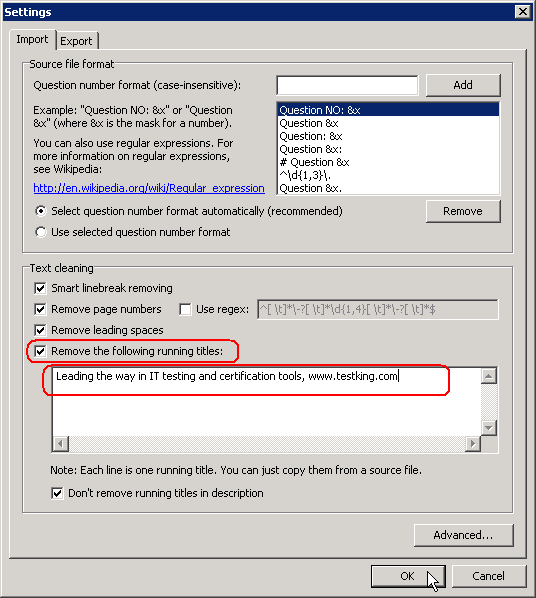
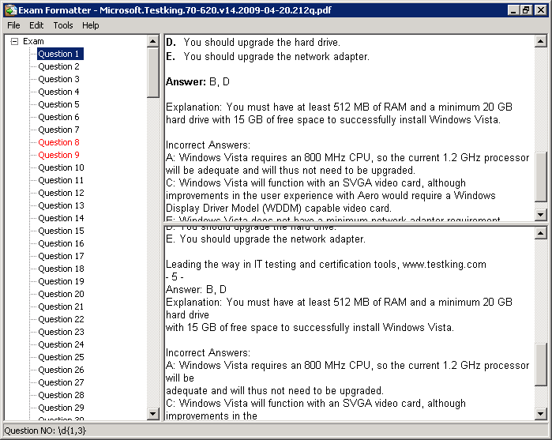
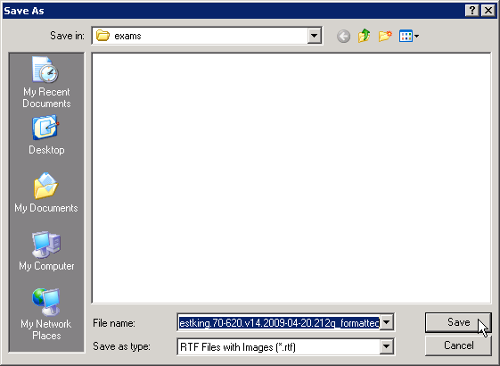
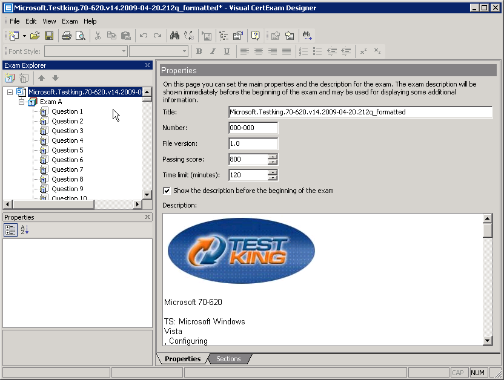
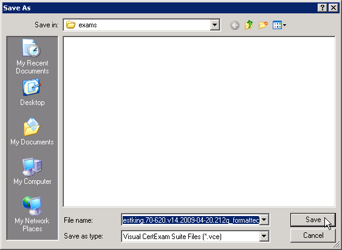
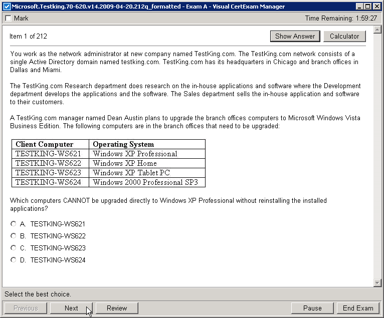

Tutorial: How to convert PDF to VCE using Exam Formatter
Let's assume that you already have the PDF file you wish to convert to VCE format.
- Launch Exam Formatter.

- From the "File" menu, click "Import". Select a PDF file and click "Open".

- If text will not be devided into separate questions, do the following.
Find the question numbering format in the PDF file. For example:
From the "File" menu, click "Settings". In the "Question number format" field, specify the question number string but replace the numberic value with &x. Click "Add".
Select "Use selected question number format". Click "OK".

- In the original text find and copy running title line to the Clipboard.

- Check "Remove the following running titles". Paste the running title line from the Clipboard. Click "OK".

- The specified running title will be removed from the text of each question.

- From the "File" menu, click "Save As...". In the "Save As" dialog box, click "Save".

- Visual CertExam Designer will be launched, if you have it installed.

- From the "File" menu, click "Save". In the "Save As" dialog box, click "Save".

- Now you can open the created VCE file in Visual CertExam Manager.
